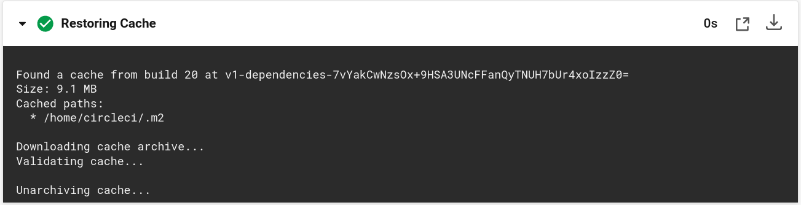

Status Monitor
practicalli/webapp-status-monitor is a Leiningen project create in October 2018.
The project uses ring and compojure as the basis of a web application.
Configured with a project.clj file.
(defproject status-monitor "0.1.0-SNAPSHOT"
:description "A server side website dashboard to collate monitoring information"
:url "https://github.com/jr0cket/status-monitor"
:min-lein-version "2.0.0"
:dependencies [[org.clojure/clojure "1.9.0"]
[compojure "1.6.1"]
[ring/ring-defaults "0.3.2"]
[hiccup "1.0.5"]]
:plugins [[lein-ring "0.12.4"]
[lein-eftest "0.5.3"]]
:ring {:handler status-monitor.handler/app}
:profiles
{:dev {:dependencies [[javax.servlet/servlet-api "2.5"]
[ring/ring-mock "0.3.2"]]}})
CircleCI Configuration
This configuration uses a docker image with Leiningen version 2.8.1
The configuration defines that the code will be check out, Leiningen will download the dependencies and then run unit tests.
# Clojure CircleCI 2.0 configuration file
#
# Check https://circleci.com/docs/2.0/language-clojure/ for more details
#
version: 2
jobs:
build:
docker:
# specify the version you desire here
- image: circleci/clojure:lein-2.8.1
# Specify service dependencies here if necessary
# CircleCI maintains a library of pre-built images
# documented at https://circleci.com/docs/2.0/circleci-images/
# - image: circleci/postgres:9.4
working_directory: ~/repo
environment:
LEIN_ROOT: "true"
# Customize the JVM maximum heap limit
JVM_OPTS: -Xmx3200m
steps:
- checkout
# Download and cache dependencies
- restore_cache:
keys:
- v1-dependencies-{{ checksum "project.clj" }}
# fallback to using the latest cache if no exact match is found
- v1-dependencies-
- run: lein deps
- save_cache:
paths:
- ~/.m2
key: v1-dependencies-{{ checksum "project.clj" }}
# run tests!
- run: lein test
Caching dependencies
CircleCI create a cache of downloaded dependencies, to help speed up the running of the project.
The config.yml defines the path where the dependencies are saved. A unique key is used to identify the dependencies cache.
